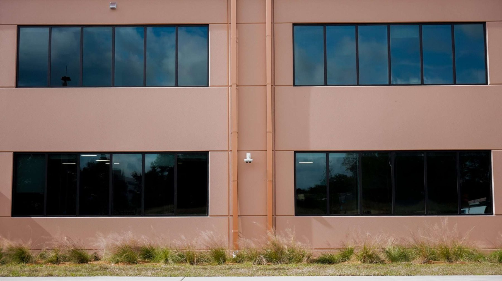

Exterior sunshades and louvers — the shading half of the energy-code equation.
Glass gets specified for U-factor and SHGC. Shading devices are what actually keep solar heat off the glass before it becomes a cooling load. How sunshades and louvers attach to storefront and curtain wall framing, and where they fit in a Florida energy-code compliance path. Written for architects, GCs, and owners — not a sales sheet.
The glass fights heat gain from the inside out. Shading fights it before it arrives.
Solar heat gain coefficient (SHGC) describes how much of the sun's heat a glazing assembly lets through. Every commercial glass package gets specified to a U-factor and SHGC target under the project's energy code path. Florida's 8th Edition (2023) Energy Code sets maximum U-factor and SHGC values for commercial fenestration in Table C402.4, and requires replacement fenestration on existing buildings to meet those same limits when units are swapped out — not the code in force when the building was built. That's a glass-package decision.
Exterior shading is the other half of the same problem, attacking it before the sun ever reaches the glass surface. A sunshade, louver blade, or fin mounted outboard of the glazing plane intercepts direct solar radiation at the building skin instead of asking the glass to reject it after it's already inside the assembly. The two strategies aren't interchangeable — a high-SHGC glass package with well-designed shading can outperform a low-SHGC package with none, especially on south- and west-facing elevations carrying the most direct sun. The same code cycle that tightened glazing SHGC and U-factor limits also added an overhang projection-factor requirement tied to fenestration orientation — a direct, code-referenced link between shading geometry and glazing compliance, not just an aesthetic add-on.
The controlling numbers — exact SHGC target, exact projection factor, exact orientation cutoffs — are always project-specific, tied to the building's climate zone and the energy model the design team ran. This page is the installer's-eye view of how the hardware gets designed and attached; the energy compliance path itself belongs in the project's energy-code compliance documentation.
Sunshade and louver hardware — what shows up on a Div 08 spec.
Category descriptions only — actual blade depth, spacing, and projection factor are calculated per elevation and orientation by the design team, not assumed from a generic table.
Where sunshades actually attach — and why that's a glazing-contractor problem, not just a metals problem.
A sunshade drawing usually shows up on the architectural elevation and the structural steel package. What it doesn't always resolve cleanly is the connection back into the storefront or curtain wall frame that's carrying the glazing load at the same location. That's the point where this becomes a glazing-installer's problem, not just a metals subcontractor's:
- Load path back to the mullion. Cantilevered sunshades impose bending and wind loads on the curtain wall mullion or storefront header they attach to — loads the base glazing system wasn't necessarily sized for until the sunshade was added to the design. Confirm mullion capacity includes the shading device's imposed load, not just the glass and wind pressure on the vision area.
- Penetrations through the weather barrier. Every bracket that ties a sunshade back to the structure or the curtain wall frame is a potential water path. Bracket penetrations need to be detailed and flashed at the same rigor as any other envelope penetration — sealant alone at a structural bracket is not a detail, it's a callback waiting to happen.
- Thermal bridging at the attachment. A shading device is doing energy-code work, but a poorly isolated bracket can undercut it by creating a thermal bridge straight through the insulated frame. Thermally broken brackets or standoff isolation matter more on a shading connection than people expect.
- Differential movement. The curtain wall frame moves with thermal cycling and building deflection; a stiff shading structure bolted rigidly to it without accounting for that movement will eventually telegraph stress back into the glazing anchorage.
- Coordination sequencing. On new construction, sunshade brackets are easiest to set before the glazing goes in. On a retrofit or recladding scope, retrofitting shading onto an existing storefront or curtain wall means working around glass that's already in place — a different sequencing and access problem entirely.
Common sunshade and louver spec traps.
Shading modeled, attachment not detailed
The energy model assumes a projection factor that drives the SHGC compliance path, but the shop drawings never resolve exactly how the blade attaches to the frame. That gap surfaces at submittal review, not before — ask for the attachment detail at bid stage.
Mullion capacity not re-checked
Curtain wall mullions get sized for glass dead load and wind pressure. Add a cantilevered sunshade after the fact and the mullion may be undersized for the new load. Confirm the structural calc includes the shading device before glazing is ordered.
Bracket penetrations left to "standard sealant"
A structural bracket through the air/water barrier needs a flashed, engineered detail — not a bead of sealant applied in the field. This is one of the most common sources of envelope leaks on shaded facades.
Retrofit sequencing assumed same as new construction
Adding shading to an existing storefront or curtain wall means working around glass that's already glazed in. Access, fall protection, and occupied-building logistics change the schedule and cost versus a new-construction install.
Thermal bridging ignored at the bracket
A shading device is there to help the energy-code numbers. A bracket that punches straight through the insulated frame without a thermal break can give some of that benefit back.
What we do about it
We check sunshade and louver attachment details against the curtain wall or storefront shop drawings before we quote — and flag load-path, flashing, or thermal-bridging gaps in writing at the RFI stage.

Storefront and curtain wall glazing experience, stated plainly.
ACG prices and installs the glazing systems that exterior sunshades and louvers attach to — storefront and curtain wall framing — across Florida, with ACG Nashville opening Q3 2026 to serve the same scope in Tennessee. Our verified past performance includes storefront glazing at the Haines City Public Safety Complex & EOC (25,443 SF, GC Pirtle Construction, completed 2025), the Cudjoe Key fire station for Monroe County, and the Martin County Fire Training facility — public-building envelope work where framing capacity, attachment detailing, and weatherproofing all had to hold up to institutional review.
Sunshade and louver questions architects and GCs ask.
Do exterior sunshades actually help with energy-code compliance?
Yes, when they're sized to the elevation's orientation. Florida's energy code ties commercial fenestration compliance to Table C402.4 U-factor and SHGC limits, and the current code cycle added an overhang projection-factor requirement tied to fenestration orientation — a direct link between shading geometry and the glazing compliance path, not just an aesthetic feature. The exact projection factor and target SHGC are project- and climate-zone-specific.
Can sunshades be added to an existing storefront or curtain wall?
Often, yes, but it's a different job than a new-construction install. The mullion or header the shading device attaches to needs its capacity re-checked for the added load, and every bracket penetration through the existing weather barrier needs to be flashed and detailed properly — not just sealed. Access and occupied-building logistics also change the schedule versus installing shading before the glass goes in.
Who's responsible for the sunshade attachment — the glazing sub or the metals sub?
It depends on the contract split, but the attachment point is almost always in the glazing frame — the curtain wall mullion or storefront header — which makes it a coordination item the glazing sub has to weigh in on regardless of who furnishes the shading hardware. We ask for the sunshade attachment detail at bid stage specifically so it doesn't surface as an RFI after award.
What's the difference between horizontal blades and vertical fins?
Horizontal blades block high-angle sun best — the classic use is a south-facing elevation catching overhead summer sun. Vertical fins are better suited to low-angle east and west sun, where a horizontal blade does little because the sun is coming in nearly sideways. Most buildings with meaningful solar exposure on more than one elevation end up using both, tuned per orientation.
Does ACG install exterior sunshades and louvers?
ACG prices and installs the storefront and curtain wall glazing systems that exterior sunshades and louvers attach to, and coordinates the frame-side attachment detailing — load path, flashing, and thermal-break continuity — whether the shading hardware is furnished by us or by a metals subcontractor. Send the Division 08 and shading detail package to connor@acglass.com and we'll flag any coordination gaps before we quote. FL CGC #1531993.
Related pages
Sending a shaded facade to bid?
Send Division 08 and the sunshade or louver detail package to connor@acglass.com. We check attachment load path, flashing, and thermal-break continuity against the curtain wall or storefront shop drawings before we quote.